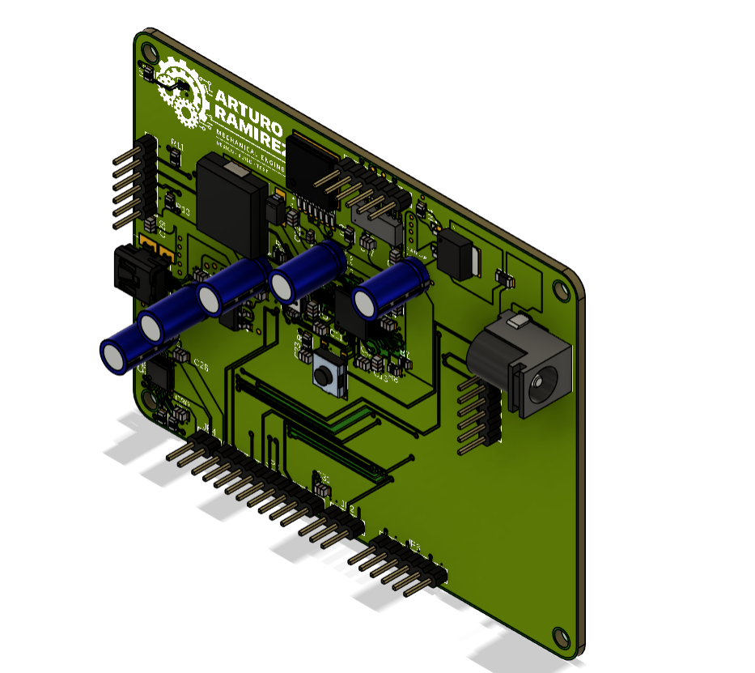
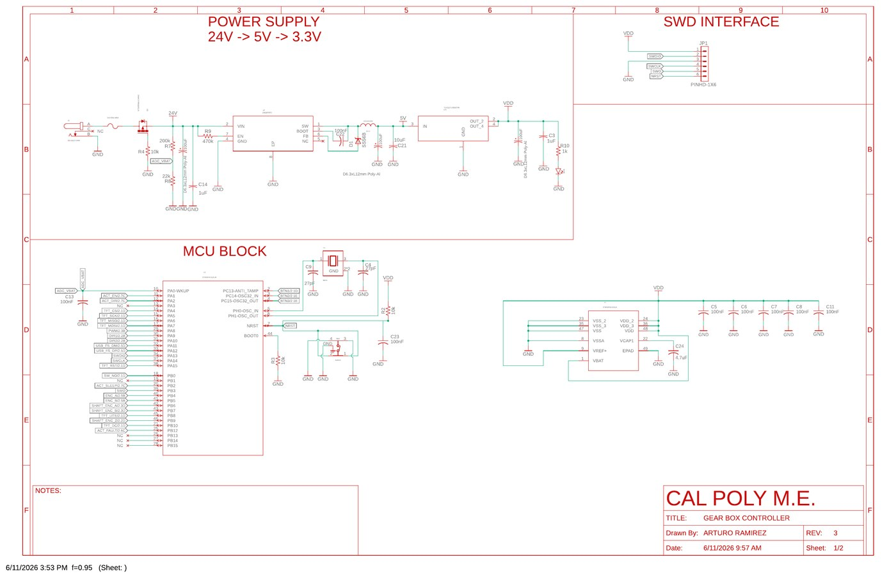
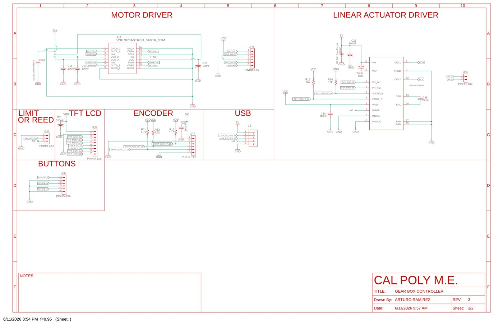
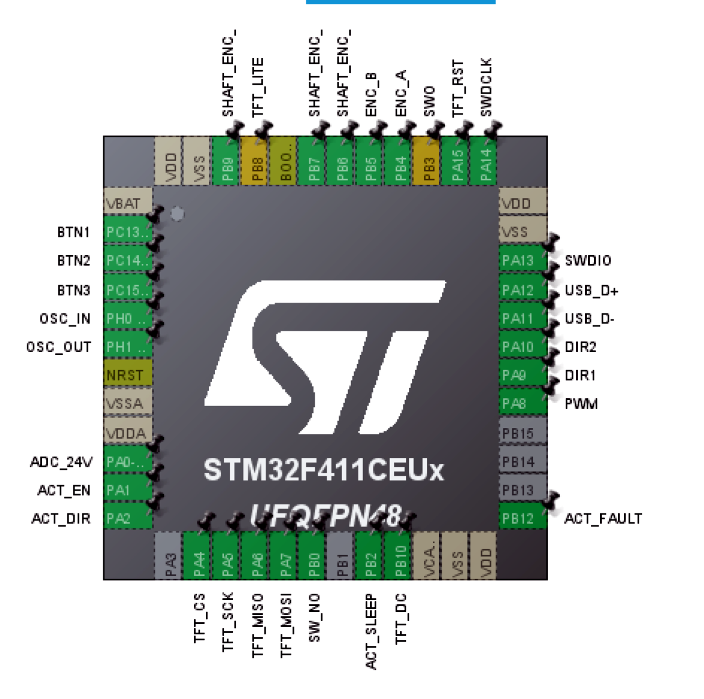

Custom PCB Overview
The custom PCB is the central electrical interface for the gearbox controller. It is built around an STM32F411CEUx microcontroller and includes connectors and circuits for power conversion, motor control, actuator control, encoders, TFT display, buttons, USB, and SWD programming.

Custom Gear Box Controller PCB render showing STM32 control electronics, headers, power components, capacitors, and project branding.
PCB status: At the time of this documentation, the custom PCB schematic and layout were completed, but the physical PCB had not yet arrived. Physical validation is therefore listed as a planned bring-up step rather than a completed result.
Schematic Summary

Schematic sheet 1: 24 V to 5 V to 3.3 V power supply chain, STM32 MCU block, oscillator/reset circuitry, decoupling, and SWD programming interface.

Schematic sheet 2: motor driver, linear actuator driver, limit/reed switch, TFT LCD connector, encoder connector, USB connector, and button connector.
Download schematic sheet 1 PDF | Download schematic sheet 2 PDF
MCU Pinout and Hardware Mapping

CubeMX STM32F411CEUx pinout connecting firmware labels to physical MCU pins.
| Subsystem | Signals | Purpose |
|---|---|---|
| Motor Driver | PWM, DIR1, DIR2 | Controls motor speed and direction. |
| Actuator Driver | ACT_EN, ACT_DIR, ACT_SLEEP, ACT_FAULT | Controls lock/unlock actuator and reads fault status. |
| Encoders | ENC_A/B, SHAFT_ENC_A/B, SHAFT_ENC_Z | Measures input and output shaft speed; index input available for shaft reference. |
| User Inputs | BTN1, BTN2, BTN3, SW_NO | Buttons plus door/reed switch safety input. |
| Display | TFT_CS, TFT_SCK, TFT_MISO, TFT_MOSI, TFT_DC, TFT_RST, TFT_LITE | SPI TFT display and control/backlight pins. |
| Debug/USB | SWDIO, SWDCLK, USB_D+, USB_D− | Programming/debugging and USB CDC interface. |
PCB Bring-Up Plan
- Visually inspect PCB for solder bridges, reversed components, and connector orientation.
- Check continuity between power and ground before applying power.
- Apply 24 V input through a current-limited supply.
- Verify 5 V and 3.3 V regulator outputs.
- Confirm BOOT0, NRST, SWDIO, and SWCLK behavior.
- Program STM32 using ST-Link.
- Confirm USB CDC enumeration.
- Test GPIO outputs with no motor/actuator connected.
- Test buttons, door switch, encoder inputs, and TFT signals.
- Connect motor/actuator loads and test at low duty cycle.
- Tune the PI speed controller after encoder readings are verified.
Known electrical risk: PB8 / TFT_LITE should be verified because the firmware treats it as a backlight GPIO while CubeMX/MSP setup may route PB8 through TIM4_CH3 depending on the final configuration. This should be checked during PCB bring-up.